NARRATIVA COMPLETA
PRÓLOGO
༺═────────────────

──────────────༺༺
Era dos Anciões
O começo de tudo, foi aqui, Na Era dos Anciões, um tempo onde a terra era deformada, com Árvores Imensas uma Névoa densa e cinzenta
Uma Terra de Penhascos Cinzentos
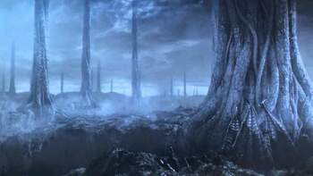
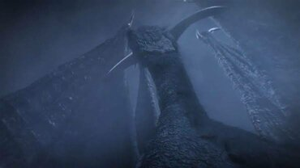
E tambem, Dragões Imortais conhecidos como "Everlasting Dragons"
Mas ai.....Veio o Fogo, e com ele a Disparidade
E Tambem....
O Calor & o Frio
A Vida & a Morte
E Claro.....Luz & Trevas
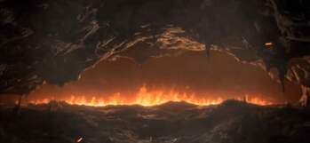
E então, das Trevas, "eles" vieram, e nas Chamas, Encontraram as Almas dos Lordes
São Eles
NITO, O PRIMEIRO DOS MORTOS
A BRUXA DE IZALITH, E SUAS FILHAS DO CAOS

IZALITH
E o Furtivo Pigmeu, Facilmente, esquecido
E então, os Lordes desafiaram os Dragões, depois de Seath ter traido os dragões e contado o segredo da Fraqueza deles a Gwyn, eles formaram uma Aliança, Seath Disse que a fraqueza dos dragões são "seus Raios" e tambem que eles dependiam de Cristais
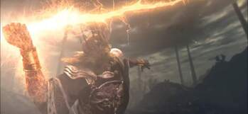
Os Poderosos Raios de GWYN, Quebravam as escamas De pedra quase Inquebráveis dos Dragões
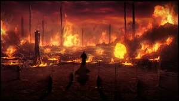
Ja as Bruxas de IZALITH, Teceram uma Imensa tempestade de Fogo
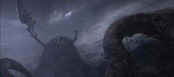
NITO Lançou uma Névoa de Morte e Doença
E SEATH o Sem Escamas, Traiu, sua Especie E depois disso, os Dragões, foram Extintos.
Gwyn da parte de sua Alma para SEATH o Dragão sem escamas, Como uma Forma de Gratidão e tambem da um Local onde ele Possa Pesquisar Cristais e Procurar por uma Imortalidade usando cobaias pelo Reino
A Era do Fogo
E então a era do Fogo se Iniciou, Gwyn criou ANOR LONDO A CIDADE DOS DEUSES, Onde ele passou a Viver e governar
Dentre Varios dos Cavaleiros Gwyn escolheu 4 para serem seus Fieis Escudeiros, são eles
Arthorias, Ornstein (E smough), Ciaran e Gough
E GWYN novamente dividiu sua Alma dessa vez com 4 Reis de um Local Proximo Chamado de New Londo
Esses mesmos Reis que Entraram em Contato com uma serpente Primordial, que Os Ensinou a Roubar Humanidade, Eles amaram isso mas logo isso se tornou um Problema, Pois um Grupo chamado de Darkwraith,s começou a se apoderar e abusar dessa Habilidade, e nessa mesma época surgiu O ABISMO, um poder Sombrio que poderia deixar qualquer Humano Louco
GWYN mandou 3 feiticeiros para selar o Abismo, e a solução mais Plausível foi Imundar o Local (New Londo)
A Maldição dos Undeads
E agora.....Restão apenas Brasas, E os homens não vêem mais a Luz, Apenas Noites sem Fim, e entre os Vivos são vistos, os Portadores do Sinal Negro apareceu a Maldição dos Undeads, essas Pessoas que tinham a Maldição não podem Morrer Para sempre, Sempre que elas morrem, elas retornam como Undeads, e caso um Undead morrer muito e acabar se perdendo do seu real Objetivo, ele se torna Um HOLLOW, Uma Casca vazia sem alma
E a Unica forma de Voltar do estado "HOLLOW" é usando a Dark Soul, que pode tambem ser dividida em varias partes sem perder sua Força, diferente das Almas dos Lordes

MARCA NEGRA
E nesse período uma Nova Religião surgiu, O Caminho Branco", os clérigos dessa Religião queriam Levar todos os Undeads para "O Asilo dos Undeads" onde ficariam La aprisionados pela Eternidade
A Bruxa de IZALITH, preocupada com a Redução da Chama e o Numero de Amaldiçoados, a Bruxa tentou Replicar a Chama Primordial, Isso resultou em uma Grande Explosão e dela surge o Caos, Os demonios e a Transformação dela no "Berço do Caos"
Gwyn ao ver o Fracasso que foi replicar a Primeira chama, Parte com Seu Cavaleiros para ir até onde Surgiu a Chama Primordial e se Sacrificar
Nito Adormece
E é Nessa época que surge uma Profecia, Uma Profecia diz que Um dia, Um Undead Escolhido Saira do Asilo e Peregrinara até a terra dos Lordes, e a Sua Missão seria de Manter a Chama Acesa
Esses, que são conhecidos como Undead's Portadores da marca da Maldição
O Undead Escolhido
Logo no começo, nós aparecemos dentro de uma cela, dando a Entender, que nós, o Jogador somos o Undead escolhido, e nesse contexto aparece um Personagem chamado "Oscar de Astora" joga um corpo dentro da nossa cela e nesse corpo, tem uma chave para abrirmos e sairmos do Asilo e depois de enfrentarmos varios hollow's, encontramos novamente Oscar, dessa vez aparentemente ferido
Oscar diz que desde sempre houve essa profecia, e diz que acha que a pessoa que esta afrente dele, pode sim ser o tal Undead Escolhido, e ele entrega um Frasco de Estus que pode ser usado para se Revigorar após Tomar ferimentos
Ao sair dali, o Undead Escolhido é surpreendido pelo Demonio do Asilo, uma criatura que esta ali, apenas para previnir que ninguem saia de La, e depois de derrotalo, Novamente somos Surpreendidos mas dessa vez, por um Corvo Imenso, que Leva ele até a terra dos Lordes, Lordran
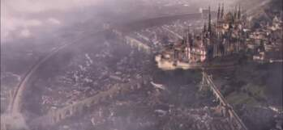
O Undead é deixado em um Local Aberto, Chamado "Firelink Shrine" e ali ele conhece um Guerreiro, Que diz que, Para ele ir até a terra dos Lordes ele precisa tocar 2 Sinos, Um no topo de uma Torre, e o outro no Subterrâneo do Local
1° Sino
No caminho para a torre, Ele encontra um outro demônio, dessa vez, na Aparencia de um Touro, Tauros Demon, depois de derrotar o demonio o Undead continua seu caminho em frente, e então é encontrada a Torre, mas, mais um Inimigo aparece, as Gargulas que estão ali te impedindo de "Soar" o primeiro sino, e depois de uma Luta dificil, o Undead Soa o Primeiro Sino

1° Sino
Logo apòs, o undead Desce, em busca do Segundo Sino, Nesse caminho os inimigos vão ficando cada vez mais Dificeis, no caminho é encontrado um outro Demonio em aparencia de bode, Capra Demon, e descendo mais ainda a Ponto de Chegar em um esgoto cheio de Ratos, Basiliscos, Hollows até chegar ao Ponto de encontrar um Dragão que se deformou por sua Sede por Almas, o Gaping Dragon
Mesmo assim, o Dragão não foi capaz de parar o Undead, que depois de Derrotalo, foi atras da Parte Podre de toda Lordran onde todos os Moradores foram Infectados com uma Infecção que causa muita dor e a Capacitação de contaminar outras pessoas, Blighttown é o Local, Além dos Moradores, todo o local se mostra todo em Sujeira maxima, varios insetos são encontrados La, e abaixo de todas as Construções de madeira, é encontrado um Pantano Venenoso
E nesse local é encontrado a entrado para os Dominios de Queelag
A Bruxa de Izalith
A bruxa de Izalith quando tentou replicar a Primeira chama Falhou, e com essa Falha ela deu origem ao Caos, Todo o Local foi Imundado em Lava ficando conhecido como, Lost Izalith, no Entanto a Bruxa Estava Acompanhada de Suas 7 Filhas, e além delas ela tambem tinha 1 filho
2 das Filhas de Izalith foram consumidas junto com sua Mãe, uma delas foi morta depois, restando 4 filhas e o filho de Izalith, 2 se transformaram em criaturas deformadas, da Cintura para cima eram Mulheres normais, e da cintura para Baixo viraram Aranhas, e as outras 2 não sofreram nenhuma Alteração Aparente, Queelana que era conhecida como a Mãe da Piromancia, fugiu de Lost Izalith e a Outra fica proximo a Sala onde a Bruxa tentou replicar a Chama
Assim que o Undead Chega nos Dominios de Queelag, o Undead percebe que varias pessoas estão com casulos em suas Costas, Aparentando muito sofrimento, proximo dali da para ver o Gigante de Lava, que aparentemente esta Inofensivo e também esta sentindo muita dor, Mas assim que o Undead se Aproxima do Corpo de uma das filhas de Izalith, ele começou a Atacar, seu nome era, Ceaseless Discharge, e ele era o Filho da Bruxa de Izalith
Após derrotar queelag, é descoberto que Queelag estava Apenas procurando Humanidades para amenizar o sofrimento de sua Outra irmã, a Fairlady, a Fairlady após a Infecção, tentou ajudar os Cidadãos Locais, ela conseguia Amenizar a dor deles mas Em Contra partida ela Agravava sua Propia situação, depois de Muito sofrimento Fairlady acabou ficando Cega, e surda, Queelag não queria ver sua Irmã sofrendo desse jeito, e a Unica coisa que ela poderia fazer, era conseguir o Maximo de Humanidades e entegar Para Fairlady
2° Sino/Sen's Fortress
Apos sair de la, é encontrado o Segundo Sino, e após toca-lo um portão imenso é aberto

2° Sino
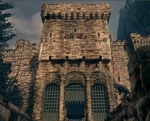
O Potão que foi aberto, é o portão de Sens Fortress, uma Fortaleza imensa, que esta cheia de armadilhas e Homens serpente, e após muitas Lutas ele chega ao topo, Onde encontra, O Iron Golem, que Guarda o Local, após derrotalo o Undead recebe um objeto que da Passagem para Anor Londo
Explorando muito todo esse Castelo é encontrado dois guerreiros estremamente poderosos, Ornstein&Smough, Aparenetemente um Completa o outro, enquanto um estremamente rapido o outro muito Forte, e para piorar quando, o undead derrota Smough, Ornstein Absorve o poder do companheiro, e após uma Luta Épica o Undead sai Vitorioso

O&S
E Logo a frente é encontrada, Gwynevere, uma das Filhas de Lorde Gwyn, ela diz que o Undead deve Recuperar um Artefato, chamado de Lord Vessel, e nele o Undead deveria depositar as Almas dos Lordes Primordiais, uma esta com a Bruxa de Izalith, a Outra com Nito, e a terceira alma que foi dividida, Parte que estava com Seath o dragão sem escamas, e a Outra com os 4 Reis de New Londo
O Undead na verdade descobre que a filha de Gwyn não estava ali, na verdade aquilo era uma Projeção criada por Gwyndolin, que estava Manipulando o Undead escolhido a tentar reviver a Chama Primordial, depois disso é visto que tudo o que o Undead viu em Anor Londo não era Real, era tudo uma Ilusão criada Por Gwyndolin, Logo Atras é encontrado Gwyndolin e uma Luta começa, Lorde Gwyn teve 3 filhos
Gwyndolin, Nascido com uma afinidade para a Lua, e isso era um Aspecto feminino, e por causa disso Gwyn o escondeu
E um outro que foi Riscado de todos os registros, e como Punição gwyn o apagou de toda a Historia
Após tudo isso, o Undead resolve seguir o Caminho da Profecia
Caminho da Profecia
O Undead retorna Para Lost Izalith, e encontra o que restou da Bruxa de Izalith, um inimigo conhecido como Berço do Caos, ao chegar na Arena é encontrada uma Criatura imensa toda deformada, e em seu Lado esquerdo e direito à circulos que representam as 2 filhas que estavam ao lado da Bruxa, Após derrotar ela, o Undead pega a sua primeira Alma dos Lordes
O proximo objetivo agora é Nito, ele fica em uma Catacumbas proximas de Firelink, chegando la ele se depara com uma criatura Gigante com caveiras e um Manto negro em seu corpo, Após essa luta a 2° alma de Lorde é recebida, Resta agora a Alma dividida de Gwyn
Ao passar por uma Biblioteca imensa cheia de Canalizadores, quando o Undead chega ao Topo ele encontra Seath o sem escamas que estava Fazendo pesquisas no topo da Biblioteca, o undead é capturado e preso em uma Cela onde seath Guarda suas Cobaias que ele pedia para os Canalizadores Buscar pelo reino, em sua Maioria eram Mulheres
o undead escapa e encontra uma Caverna imensa cheia de Cristais e depois de varias Batalhas ele chega ao Fundo da Caverna onde encontra Um Cristal Diferente, Seath alcançou sua Imortalidade mas de uma Forma artificial, esse cristal que o Undead Encontra é o que faz o Seath ser Imortal, mas se o Cristal for quebrado faz com que Seath volte a Ser Mortal, o Undead Quebra o Cristal e derrota Seath, assim restando Apenas os 4 Reis de New Londo
.png)
Seath
o Undead Parte para new londo e ve o que restou de la, tudo Completamente Imundado e Destruido com mortos Delirando por toda a Parte, ao chegar no local mais longe do local o Undead encontra um Buraco onde ele cai e chega no Abismo, Mas para andar no Abismo ele usa o Anel que ele Adquiriu ao derrotar Sif, o Lobo que Artorias tinha como Companheiro, ao Pular nesse buraco é Encontrado os 4 reis que Sucumbiram aos poderes das trevas e foram trancafiados no Abismo, Após uma batalha quase Impossivel, o Undead novamente sai vitorioso e agora só resta ele Depositar as Almas dos Lordes no Lord Vessel
Prorrogação da Chama
Voltando o Caminho para Firelink Shrine onde tudo Começou, uma Serpente Primordial aparece chamada de Frampt, ela encoraja o Undead a depositar as Almas no Lorde vessel e tentar Reacender a Chama primordial, ele o Oferece levar até o local onde as Almas devem ser depositadas, e depois de colocar todas as Almas no Lorde vessel, uma Porta se abre
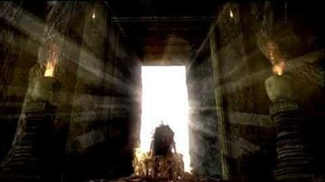
E esse é o Local onde Gwyn tentou Reacender a Chama Primordial, o Local parece estar parado no tempo, As unicas companhias são os Cavaleiros Negros de Gwyn

Fornalha da Primeira Chama
e após andar por todo o Local o Undead chega ao centro do Local, onde Gwyn tentou Reacender a Primeira chama, ele encontra Gwyn dessa vez conhecido como senhor das Cinzas, Gwyn estava Desgastado e fraco, O Undead Vence a Luta, e Cumprindo a Profecia ele tenta Prolongar a Vida da chama primordial

Gwyn Decaido
o Undead Absorve as Almas dos Lordes e Adquiriu diversas Almas, e no fim com seu sacrifício foi possível prolongar a Chama Primordial, só não se sabe até quando
É provável que ela enfraqueça novamente, e quando isso acontecer o Ciclo ira Recomeçar com um Novo Undead tentando prolongar a Chama Primordial, Fim
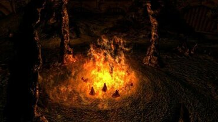
Final Alternativo
Existe uma outra serpente primordial chamada de Kaathe, que defende que o Curso natural das Coisas é deixar que a Chama se apague para que uma Nova era se inicie essa era chamada de, Era das Trevas, Assim que o Undead derrota Gwyn, ele sai da Sala e do lado de fora ele é recebido por varias outras serpentes Primordiais que se curvam diante do novo Lorde das Trevas, Fim
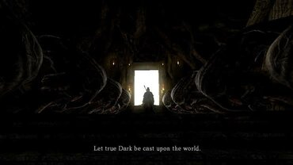
Arthorias Of the Abyss
Na era antiga, Pouco tempo depois que os Lordes Encontraram suas Almas na Primeira Chama, eles foram reconhecidos como Deuses pelos Humanos, e o que os Lordes sempre temiam era a Aura escura que alguns humanos carregavam, essa aura que eles chamam de Abismo
na era de fogo quando Lordran foi criada e os deuses ja formaram seu Imperio, Haviam 4 guerreiros formidáveis, esses Guerreiros se destacaram em suas propias areas e ficaram conhecidos como 4 cavaleiros de Gwyn
No reino de Gwyn sempre tinham inimigos infiltrados, e eles precisavam ser Eliminados então existia uma Ordem de Mulheres assassinas que faziam esse Serviço, Ciaran era a Mais renomada dentre elas, ela tinha uma Das Adagas Dourada que causava Sangramento e chamava a atenção da Vitima e tinha uma Adaga Prateada com veneno potente
Matar dragões ao mesmo tempo que era um esporte para Gwyn, era dificil, e as pessoas que conseguiam, eram conhecidas como Herois, um Gigante chamado de Gough era um excelente arqueiro, e aproveitava de seu tamanho para usar Arcos e flechas Gigantes, essas Armas eram tão fortes que eram Capazes de Derrubar dragões
Ornstein, usava como tecnica principal, os Relâmpagos em sua Lança, o que era a maior fraqueza dos dragões
Artorias era focado em combater a Escuridão do Abismo, é escrito em itens no jogo que, Aetorias era rapido e imbativel com espadas Grandes e tinha Uma determinação, Inabalável, com sua reputação ele ganhou o Apelido de Abyss Walker (Andarilho do Abismo) com o tempo o Simbolo de Artorias se tornou um Lobo, e isso se deve ao Artorias ter tido um Companheiro de Batalha que era um Lobo, esse Lobo tinha a Capacidade de viver centenas de Anos e era Inteligente em um Nivel Absurdo, ele era tão inteligente que artorias o Ensinou a Atacar usando uma Espada, Esse Lobo se Chama Sif
Algum tempo depois que Gwyn se sacrificou para acender a Primeira chama, Houve um desastre em uma Cidade, essa era uma cidade de Magias Antigas chamada de Oolacile
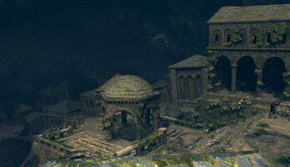
Por alguma razão desconhecida uma serpente Primordial encourajou as pessoas a encontrar o Túmulo de um Humano primordial que ficava nas profundezas de Oolacile
Quando o Túmulo foi profanado, o humano ressurgiu de uma forma destorcida e ficou Insano, essa nova forma era totalmente feita de Escuridão maligna e agressiva do Abismo, era tanto que chegava a Transbordar, essa Escuridão corrompeu os Humanos que entraram em seu Túmulo, e os transformou em Monstros aos poucos essa Escuridão foi se espalhando, até o Ponto onde todos em Oolacile ou se tranformaram em monstros ou foram Mortos por eles, A Cidade Oolacile virou um grande apunhado de Escuridão, e essa criatura que foi distorcida e profanada ficou conhecida como, Manus, o Pai do Abismo
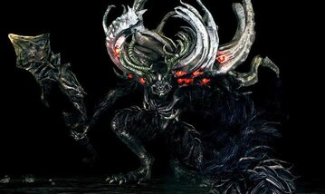
Com a Ameaça do Abismo Vazando, Artorias e Sif partiram em busca de solucionar esse problema, eles passaram pelos Monstros até conseguirem alcançar o Manus, e mesmo que o poder desses Guerreiros de Gwyn fosse, Inabalável e Magnificente, Não adiantou, o poder brutal e Puro da Escuridão do Manus foi maior, No final Artorias e sif perderam, o Braço direito de artorias foi quebrado e ele começou a ser corrompido pela escuridão do Abismo, com seus ultimos esforços ele criou uma barreira com seu escudo para defender Sif dos espiritos de escuridão da Caverna, depois disso ele perdeu a consciência se tornando um monstro sem controle
O que Manus queria era Encontrar um Pendante perdido a qualquer Custo, manus usa uma Magia extremamente perigosa, uma Magia que abre um pedaço no espaço tempo, e com essa Magia ele encontra o Item que procurava, mas ai ele puxou para sua época a Pessoa que estava com esse item, Sim, o Undead Escolhido, esse mesmo que encontrou Pendante no castelo e salvou a Duquesa de Oolacile que estava aprisionada em um Golem de Cristal
Depois que ela desaparece, perto dali aparece uma Fenda e quando o undead vai investigar um braço medonho o puxa para dentro dele
o Undead Acorda em um jardim estranho e logo descobre que esta no Passado, Logo afrente um coguelo chamado de Elizabeth diz sobre a situação tenebrosa que Oolacile esta passando, ela tambem teme que o Artorias seja corrompido, Logo a frente ele Encontra o Guardião do Santuário e após uma Breve Luta, O Undead Vence
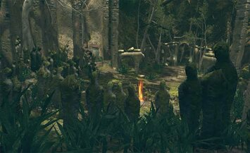
Passando pelo Jardim real da para ver a destruição que o Abismo causou na area
E passando pela entrada da Cidade é visto o Artorias corrompido matando uma Criatura, quando ele sente a presença ele vai para cima do Undead, e depois de uma Luta apertada, O Undead sai Vitorioso
Logo afrente é encontrado o Gough, que ja naquele tempo estava Velho e Aposentado da caça aos Dragões, agora ele faz pequenas esculturas de madeira, ele te agradeçe por ter Tirado o Artorias desse sofrimento e ter previnido que o Mesmo causasse a morte de Inocentes.
Gough pergunta se você quer substituir o trabalho de artorias e acabar com Manus, o Undead se decide e vai atras de Derrotar Manus, mas antes ao Voltar na Arena ele encontra, Ciaran de Luto pelo seu Amigo na qual tinha um Grande Afeto até mesmo interesse Amoroso
Após o Undead passar por toda a Cidade de Oolacile derrotando as criaturas mais grotescas possiveis, ele chega em um grande Buraco, o Local onde foi escavado pelos Habitantes Locais, feito para Encontrar o túmulo do Manus, Explorando o local que esta Infestado por Humanidades Vagando é encontrado uma Passagem secreta onde o Undead encontra Sif sendo protegido pelo Escudo de Artorias
Seguindo o Caminho é encontrado o Manus, o pai do Abismo, Sif aparece e Ajuda na batalha contra ele, e após uma longa Luta, O undead derrota Manus
e perto dali é Encontrada a Duquesa de Oolacile desacordada, e assim O Undead a Resgata, Após voltar Gough agradece
Voltando ao Inicio Elizabeth diz que é melhor que as pessoas não saibam do seu envolvimento com isso tudo, e talvez o Motivo seja porque não se sabe o impacto que isso faria no Mundo de Dark Souls caso saibam que é possivel realizar uma Viagem no Tempo, Após isso você volta e continua sua aventura em Busca de Reacender a Primeira Chama

.png)